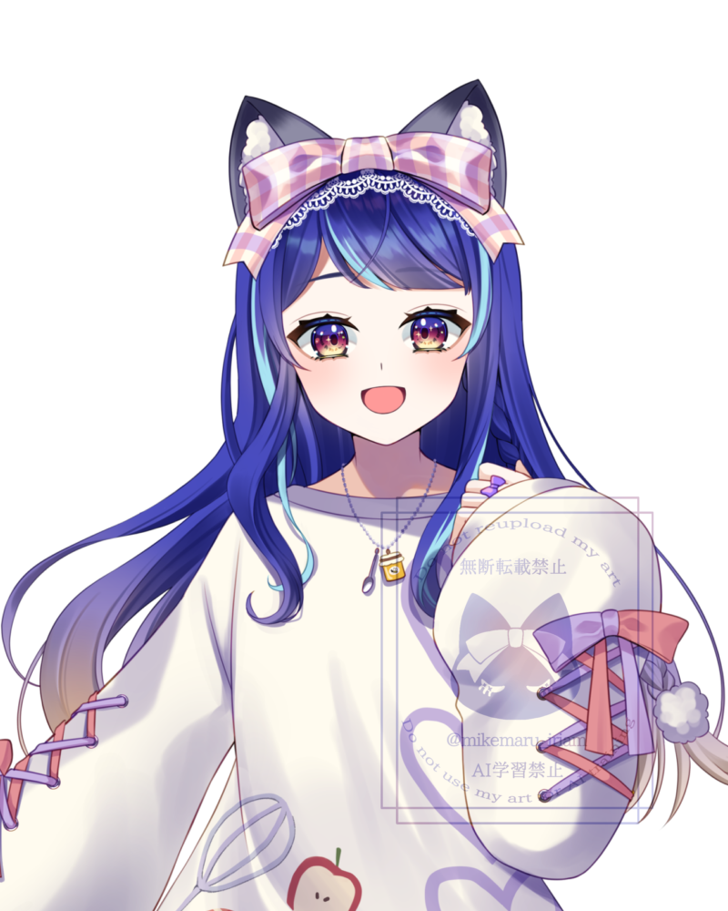
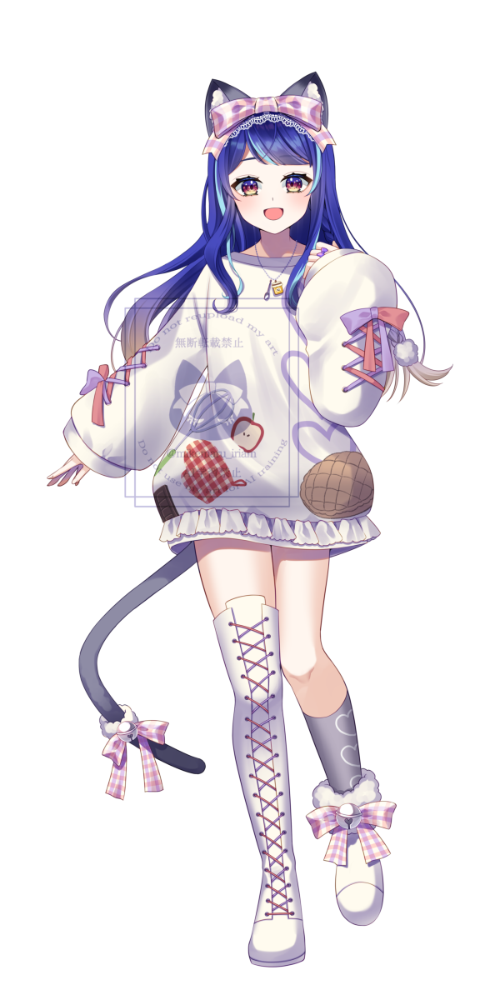

初配信
☾ ✦
OFFICIAL WEBSITE

ミケ丸
あくびをよくする、おねむ系Vライバー ฅ( 'ω' ฅ)
2024.08.20 Debut 2026.08.20 2nd Anniversary
PROFILE自己紹介
46UPLive 所属 12期生
お料理やお菓子作り、裁縫やお歌を歌うことが大好きな、人間になった猫ちゃんですฅ( 'ω' ฅ)
2024年8月20日からIRIAMで活動中。
2026年8月20日に2周年を迎えました。
初配信から毎日配信を継続中！
古のアニソンやボカロも大好き。皆さま仲良くしてくださいฅ( 'ω' ฅ)
配信は20〜22時頃を予定。朝枠などのゲリラ配信もあります。
最新の配信予定はIRIAM・Xをご確認ください。

STREAM RULES配信内ルール
みんなで楽しく過ごすために、ご協力をお願いします。
- 過度な自語りや下ネタはお控えください。
- 枠主やリスナーさんが不快になるコメントはお控えください。
- 許可のない画面録画は禁止です。
- 注意後も改善が見られない場合、ブロック等の対応をすることがあります。
COMMUNITY各種タグ
挨拶
こんみけ ／ おつみけ
ファンマーク
🫰🐱
ファンネーム
#はらぺこフレンズ
ファンアート
#ミケ猫アート
ファンタグ
#ミケ猫にっき
配信タグ
#ミケ猫の足跡
飯テロ
#ミケ猫ごはん
DREAMS & GOALS配信内目標
✓ 達成
B帯タッチ
✓ 達成
A帯タッチ
☆ 挑戦中
S帯タッチ
☆ 挑戦中
マイカラーブルー
☆ 挑戦中
大阪駅ポス掲載
☆ 挑戦中
雑誌掲載
☆ 挑戦中
イラギフ
ILLUSTRATORS絵師様方
水深子様
立ち絵：スウェット／白ドレス／ジャージメイド／水着（差分あり）／ルームウェア
SD：煮込まれミケ丸
一枚絵：2025年誕生日／2026年1.5周年／2026年2周年
狛神真冬様
立ち絵：犬
月兎耳白桜様
SD：着物／魔女／おばけちゃん／ねこ／うさぎ／土下座ちゃん／すやすやちゃん
猫ノ夢々様
SD：雨合羽と傘（差分あり）
作品画像と絵師様のリンクは確認後に掲載します。
ACHIEVEMENTS入賞記録・活動の歩み
イベントの入賞・ランク到達・記念日を年代順に掲載しています。
2024
バナイベ 106位 Thx
アフタヌーンティー 🥉
2025
ハーフアニバーサリー
ゆめかわ背景 🥉
B帯到達
ねこころぬい 5位
1周年
鏡のティーパーティー 🥈
アフタヌーンティー 🥉
ワードプチギフト 🥉
A帯到達
2026
ねこぱんち（ミケ） 🥈
1.5周年
誕生石（エメラルド） 🥈
2周年